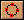

教程 1 - 快速总览
介绍
这个教程快速总览了Moho的主要功能，并没有太多的细节。用意并不在于教会你使用特殊的功能，而是让你对Moho的工作流程有一个总体的了解。在这个教程中，我们将绘制一个简单的物体，并且使它动起来。
Moho的若干种编辑模式组成了其不同的工作任务。在每一种编辑模式中，可以使用的工具是不同的，你可以在任何时候通过单击鼠标在多种模式中切换。Moho基本的编辑模式有以下四种：绘图、填充、骨骼和动画。只要点击Moho工作区左上方相对应的模式标签即可在这几种模式中切换。
这个教程总体介绍了矢量层的绘图、填充、骨骼和动画编辑模式，接下来的四个教程分别介绍这四种编辑模式。
绘制一个简单的造型
双击Moho图标或者从开始菜单中选择Moho图标(如果是BeOS，在Be菜单中)，启动Moho。新建一个文件，软件自动进入绘图模式，如下图所示：

点击工具条上的绘制圆形工具  图标，选择该工具。在工作区中点击并拖动鼠标，绘制一个圆形。绘制时按住Shift键则生成圆形，否则可以绘制椭圆形。注意保持该圆形在蓝色的方框内部(只有在这个蓝色方框内部的内容才能在最后生成的作品中看到)，如下图所示。如果你不满意画出的形状，从菜单中 Edit->Undo 即可取消操作。
填充该造型
点击填充模式标签切换到填充模式。

在填充模式中，你可以选择在绘图模式中绘制的图形，并且用颜色填充它们。从菜单中选择 Edit->Select All 命令。然后在工具条中点击填充工具
 ，屏幕显示应如下图所示：
，屏幕显示应如下图所示：

填充工具显示了准备填充的区域(红色的格子区域)。然而这个区域现在并没有真正被填充。当你确认红色的格子区域是你希望填充的部分后，按下空格键，这就告诉Moho你确定希望对这个区域进行填充了。
按下空格键后，填充风格窗口自动更新，其中显示了针对这个图形的填充的选项。

点击 "Fill color" 方形区域，为你的圆形选择一种颜色，然后设置 "Edge width" 调节划块到 1。最后，在菜单中选择 File->Render 命令。会出现一个新窗口，显示了你的作品的当前输出效果。看完后，关闭该窗口。
简单动画
点击动画标签切换到动画模式。

在动画模式中，你可以在某一帧通过移动物体来设置关键帧，在两个关键帧之间的内容，Moho会自动计算物体的位置。
切换到动画模式后，动画面板会自动打开，面板上方的标尺显示了动画的帧数。点击帧标记将其移动到12帧，这样就把当前帧设置到了12帧。

 接下来从菜单中选择 Edit->Select
None 。在工具条中点击移动工具
。点击并向上拖动圆形底部的节点，形成一个如下图所示的形状：
接下来从菜单中选择 Edit->Select
None 。在工具条中点击移动工具
。点击并向上拖动圆形底部的节点，形成一个如下图所示的形状：
 现在从工具条上选择旋转层工具
现在从工具条上选择旋转层工具  。点击并拖动图形，直到如下图所示：
。点击并拖动图形，直到如下图所示：
 在动画面板的标尺上点击第24帧，将当前帧移动到第24帧。然后从菜单中选择
Animation->Reset All Points ，将所有的点恢复到它们原来的位置。从菜单中选择 Animation->Reset
Layer Rotation ，将层恢复到旋转以前的状态。
在动画面板的标尺上点击第24帧，将当前帧移动到第24帧。然后从菜单中选择
Animation->Reset All Points ，将所有的点恢复到它们原来的位置。从菜单中选择 Animation->Reset
Layer Rotation ，将层恢复到旋转以前的状态。
恭喜恭喜！你已经制作好了一个动画！点击动画面板中的播放按钮来观看吧：

 看完后，点击停止按钮。当然，这个动画可不会为你赢得什么影视大奖^_^，不过你已经对Moho有了一个好的学习的开始了，不是吗？你已经学习了Moho中不同的编辑模式，也学会了使用一些工具，你可以自己试着多做些什么，比如再增加几个关键帧。如果你已经准备好了再多学一些的话，那么，进入
教程 2 吧！
看完后，点击停止按钮。当然，这个动画可不会为你赢得什么影视大奖^_^，不过你已经对Moho有了一个好的学习的开始了，不是吗？你已经学习了Moho中不同的编辑模式，也学会了使用一些工具，你可以自己试着多做些什么，比如再增加几个关键帧。如果你已经准备好了再多学一些的话，那么，进入
教程 2 吧！